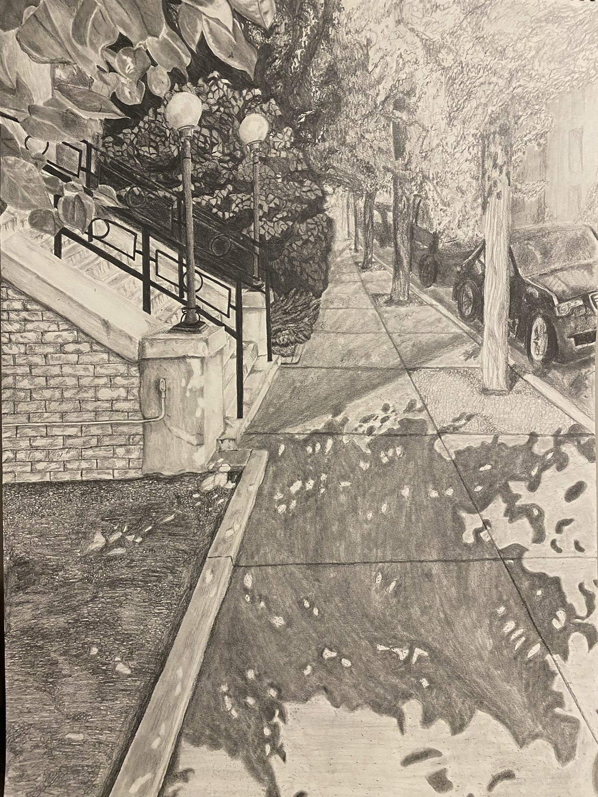
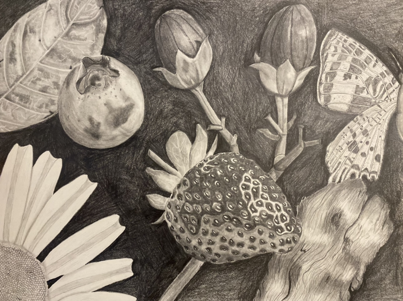
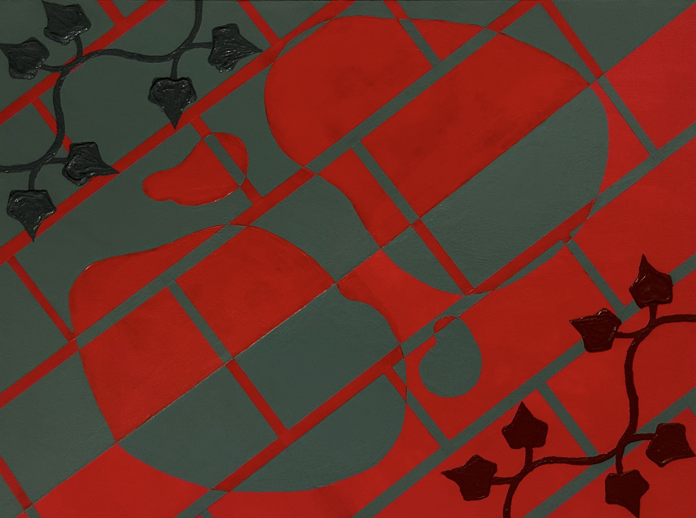

Art Foundation
Fall 2022 & Spring 2023


Each of these 18 x 24” graphite drawings are a testament to a variety of traditional rendering techniques, all completed in an intense one week period. The leading work shows exact fidelity to observation and precision to scale. The lower drawing, on the other hand, is a conceptual compositing, a kind of 'human Photoshop' in which I manipulated the scale of and combined several source images into a single hand drawn composition.

Heavy textures are used to create a physical sense of depth in this 18 x 24” abstract acrylic painting. The ivy was sculpted to come off the canvas in three dimensions by mixing acrylic paint with texture sand, giving a dynamic, tactile element to the visual composition.